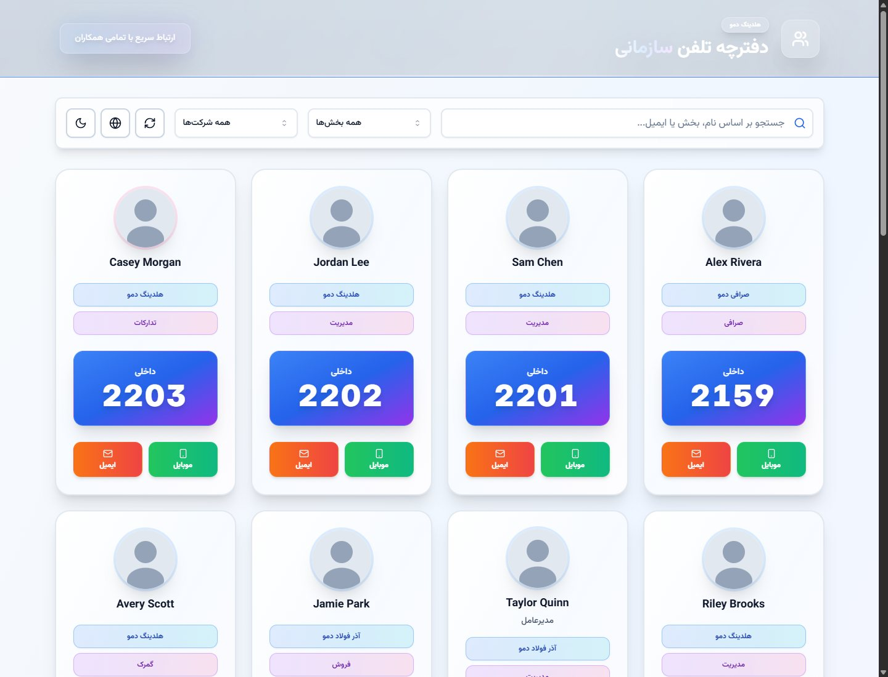

People operations · Internal tools
A dependable organization phone book with fast search, polished staff UI, and deployment-ready foundations. Public product window for ramioo.
Structured people and teams directory.
Find the right contact without friction.
Clear interfaces for daily internal use.
Practical foundations for repeatable delivery.
